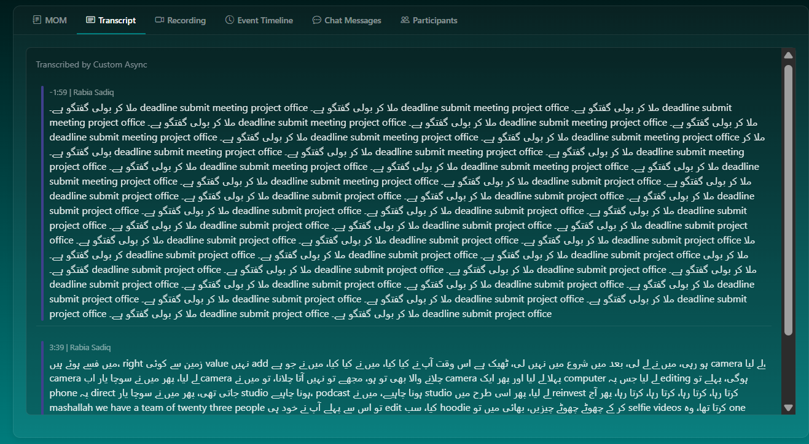
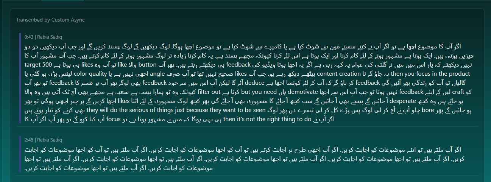

Transcription Issues Observed During Attendee Bot Testing
Means I logged-in with this:
Please test simultaneous calls scenario on this portal.
https://api.pda.gov.pk/mihbot/projects/proj_gyac8gcRP3DwnPSF/bots/bot_3Vkg98du2VvVTOoq
email: mihbot@pda.gov.pk
password: 8*Cv8rPyyU5'=zs
Attendee Meeting Minutes Hub
Meeting Minutes Hub
Meeting Minutes Hub
This test was the very best one. I can't able to find any Repetation or Deletion.
Reference Text:آپ کا content اچھا ہے نا، so it doesn't matter آپ نے کتنے سستے phone سے shoot کیا یا کتنے مہنگے camera سے shoot کیا۔
Content اچھا ہوگا، لوگ دیکھیں گے، لوگ پسند کریں گے۔ اور جب آپ دیکھیں، دو چیزیں ہوتی ہیں: ایک تو ہوتا ہے مشہور ہونا، ایک ہوتا ہے مشہور ہونے کے لیے کام کرنا، اور ایک ہوتا ہے کہ اس لیے کرنا کیونکہ مجھے پسند ہے یہ کام کرنا۔ زیادہ تر لوگ مشہور ہونے کے لیے کام کرتے ہیں۔ So جب آپ مشہور، آپ کا target ہی ہوتا ہے نا 500 likes، تو آپ وہ like والا button ہی دیکھتے رہتے ہیں۔ پھر آپ feedback نہیں دیکھتے کہ یار اس میں میں نے یہ غلطی کی، عوام یہ کہہ رہی ہے۔ اگر یہ اچھا ہوتا، video کی length بڑی ہوگئی یا color quality اچھی نہیں ہے یا angle صحیح نہیں تھا، آپ صرف likes بیٹھے دیکھ رہے ہو۔
جب آپ content creation پہ جاؤ گے نا، when you focus on the product، تو پھر آپ feedback بھی لو گے۔ پھر آپ کو ہر قسم کا feedback آئے گا لیکن آپ اس میں سے خود deduce کر پاؤ گے کہ آپ کے لیے کون سا اچھا ہے feedback۔ گالیاں تو آپ کو زندگی بھر آئیں گی کیونکہ وہ تو ہمارا پیشہ ہے، شعبہ ہے۔ مجھے بھی آج تک آتی ہیں۔ وہ والا filter out کرنا ہے but you need... ہاں، demotivate نہیں ہونا۔ تو جب آپ اس سے اچھا feedback لیں گے، اپنے craft کو اچھا کریں گے، ہر چیز اچھی ہوگی، تو پھر likes بھی آ جائیں گے، پیسے بھی آ جائیں گے، سب کچھ آ جائے گا، مشہوری بھی آ جائے گی۔
پھر کچھ لوگ مشہوری کے لیے اتنا desperate ہو جاتے ہیں، وہ کچھ بھی کرنے کو تیار ہوتے ہیں۔ They will do the silliest of things just because they want to be seen۔ چلو آپ نے آج کر لی، لوگ ہنس پڑے، کل کر لی، تیسرے دن پھر لوگ bore ہو جائیں گے۔ پھر آپ کیا کرو گے؟ تو اگر آپ کا focus ہی یہی ہوگا کہ میں نے مشہور ہونا ہے، تو then it's not the right thing to do۔ اگر آپ نے content اس لیے بنانا ہے because you like making content، تو پھر اس میں آپ بنائیں، feedback لیں، value add کریں، دیکھیں trends کو سمجھیں، لوگ کیا پسند کرتے ہیں۔
Again وہی والی بات، ضروری نہیں ہے کہ لوگ اگر بری چیز پسند کرتے ہیں تو آپ نے بھی بری کرنی ہے۔ لوگ کس طرح کی چیز پسند کریں گے، کون سی چیز میں آپ کی expertise ہے، آپ کو وہی circle ڈھونڈنا ہے جہاں پہ یہ ساری چیزیں fit ہوں۔ And once you keep hitting sixes one after the other, you will get noticed. You will get noticed by brands, you will get noticed by agencies, then you will get work, then you will get money. پھر اس طرح سلسلہ...
آپ کس سے inspire ہیں؟ Content creation میں آپ کی کون inspiration ہے؟
بہت سارے لوگ ہیں، like internationally بھی ہیں، locally بھی ہیں۔ میں تو honestly speaking میں تو ایویں مذاق ہی کر رہا تھا، I was just having fun so that was the whole idea. میرا نہ مشہور ہونے کا scene تھا، نہ مجھے پتہ تھا اس سے پیسے بھی کمائے جا سکتے ہیں۔ I was just having fun اور پھر وہ ایک چیز ہوتی رہی، ہوتی رہی، ہوتی رہی۔ ہاں، میں نے اپنے آپ کو ہمیشہ open رکھا، open to criticism, open to learn more and more, polish my craft۔ اور اسی سلسلے میں میں پھر وہ چیزیں add کرتا رہا۔ I kept reinvesting in my business۔
لوگ کیا کرتے ہیں جی، سب سے پہلا کام property لے لیتے ہیں۔ پیسے آئے، property میں ڈال دیے۔ اب وہ dead پڑی ہوئی زمین وہ آپ کو کچھ دے نہیں رہی۔ وہ ایویں... پاکستان کا مسئلہ کیا ہے؟ سارے پیسے زمینوں میں پھنسے ہوئے ہیں right؟ زمین سے کوئی value نہیں add ہو رہی۔
نہیں، میں نے لے لی بعد میں، شروع میں نہیں لی ٹھیک ہے۔
اس وقت آپ نے کیا کیا؟
ہاں، اس وقت میں نے کیا کیا، میں نے جو ہے camera لے لیا۔ Camera لے لیا، پھر میں نے سوچا یار اب camera چلانے والا بھی تو ہو، مجھے تو نہیں آتا چلانے، تو میں نے camera والا لے لیا۔ اور پھر ایک computer لے لیا جس پہ editing ہوگی، پہلے تو phone پہ direct جاتی تھی نا۔ پھر میں نے سوچا یار studio ہونا چاہیے، podcast ہونی چاہیے۔ میں نے studio لے لیا، پھر اسی طرح میں reinvest کرتا رہا، کرتا رہا، کرتا رہا، کرتا رہا۔ پھر آج ماشاءاللہ we have a team of 23 people۔
تو اس سے پہلے آپ نے خود ہی edit کیا؟
سب خود ہی کر کے چھوٹی چھوٹی چیزیں۔ بھائی میں تو selfie videos کرتا تھا، وہ one-shot ہوتی تھی، اس میں editing ہوتی ہی نہیں تھی کیونکہ مجھے editing آتی نہیں تھی، that was the whole thing۔ پھر یہ کہ وہ Windows Movie Maker ایک آتا تھا، وہ بڑا آسان تھا اس پہ video بنانا، وہ میں کبھی کبھی use کر لیا کرتا تھا لیکن کوشش ہوتی تھی کہ یار وہ بھی اس stage پہ بھی نہ آئے بات، بس میں ایک ہی go میں بولوں اور لگا دوں۔
پھر جب editor آ گیا، تو editor اپنی skills لے کر آیا۔ اس نے بولا یہ بھی ہو سکتا ہے، یہ بھی ہو سکتا ہے۔ میں نے بولا یہ تو اچھی بات ہے، پھر ایسے کرو، ویسے کرو۔ پھر میں دوسرا content دیکھتا تھا YouTube پہ international، یار یہ چل رہا ہے، اس کو یہ ایسے کر دو، ویسے کر دو۔ پھر وہ کرتے کرتے کرتے سلسلہ چلتا رہا۔
So how do you keep yourself grounded is
During attendee bot testing, two transcription issues were observed under different bot entry and speaking scenarios. Each issue is documented below with its test case, meeting link, and supporting screenshot.
It start repeating this line “ملا کر بولی گفتگو ہے۔ deadline submit meeting project office” which is not even spoken by the tester. This happens when Add Bot Instantly and Start Speaking as soon as Bot enter.
Meeting Link:
https://api.pda.gov.pk/mihbot/projects/proj_gyac8gcRP3DwnPSF/bots/bot_adRnaQqkpTMcFS0h

It can't able to Transcribe more than half of the transcription. And in between of the transcription it start repeating this line “اگر آپ ملتے ہیں تو اچھا موضوعات کو اجابت کریں۔” again and again. This happens when Add Bot Instantly but speak after 1 minute gap.
Meeting Link:
https://api.pda.gov.pk/mihbot/projects/proj_gyac8gcRP3DwnPSF/bots/bot_HX7hiGZIIvdBERuX

We also create 2 sperate meeting to test the Cross-Meeting Transcription Leakage but we can't able to find this issue on this link: https://api.pda.gov.pk/mihbot/projects/proj_gyac8gcRP3DwnPSF/bots/bot_3Vkg98du2VvVTOoq and these are the reports links to test meeting links: